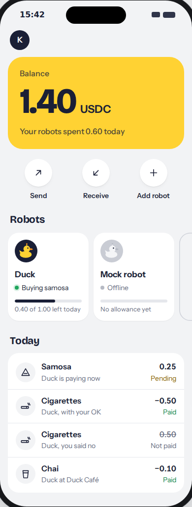
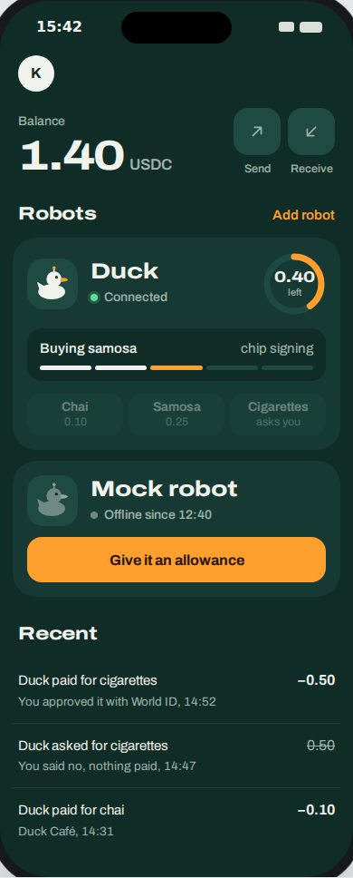
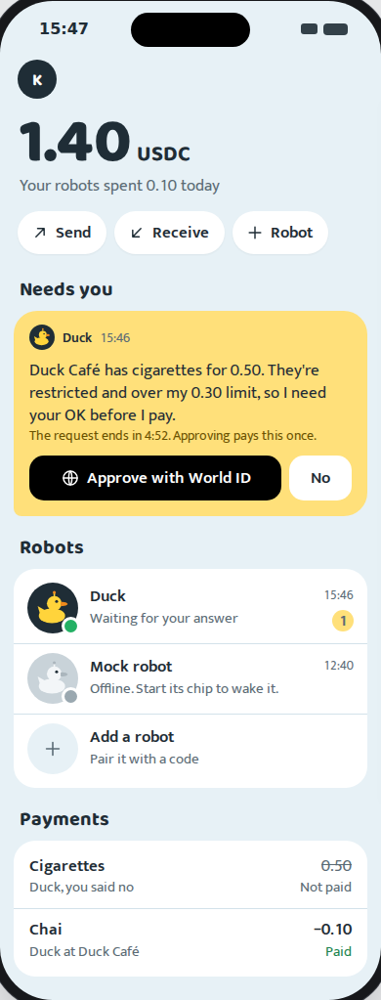

Each direction is a complete wallet: balance, Send, Receive, your robots with their allowance, activity, adding a robot, a robot's own page and the approval. They use the same real data (your 1.40 USDC, Duck's 1.00-a-day allowance, today's chai and cigarettes) and the same flows, so you can also mix them, for example B's home with A's robot page. Pick one, or name the parts you want from each.

A classic wallet: the balance card first, robots as a row of cards, activity as a list. The closest to Revolut. Seven screens, including Send and Receive.
Open A
Robots first, in a dark theme: each robot is a live card with its allowance ring and buy buttons. The robot page is a cockpit with what it reads at the top.
Open B
Each robot is a conversation: tap what to buy, and it reports back and asks inline. A waiting approval sits at the top of home.
Open C/ becomes the landing page (we design it next). The wallet lives at /wallet; signed out, it shows "Create wallet with passkey" and "Sign in".No live video, by design: "no camera frames leave the chip" is a product rule, and the pitch builds on it. The mocks show what the robot reads instead: the merchant, item, price and the invoice QR, drawn from the invoice URL. Today that is the invoice the errand pays. Once the Radxa scans QR codes, it is what the camera decoded.
green works with today's API. yellow needs a small server or frontend change. red needs new backend work. The only red one is Send.